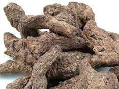

-
【别名】又名干地黄。处方名：生地、大生地、细生地、炒生地。其新鲜者名鲜生地。
【来源】玄参科植物地黄的根茎。
【性味与功效】味甘、苦，性寒。养阴生津、凉血养血。
【传统应用】主治阴虚内热，低热、发热，口干咽痛，身发斑疹，血热妄行，吐血、咯血、衄血、便血、崩漏，消渴，以及热病、温病热入营血等病症。
【传统方剂】
（1）犀角地黄汤《千金方》：犀角、生地黄、丹皮、赤芍，治疗热病温病热入营血，神昏谵语。
（2）清营汤《温病条辨》：犀角、生地黄、玄参、竹叶心、麦冬、丹参、黄连、银花、连翘，治疗热入营分，发热，斑疹，舌绛而干。
（3）黄土汤《金匮要略》：生地、阿胶、附子、黄芩、灶心土、甘草，治疗下血，亦主吐血、衄血。
（4）导赤散《小儿药证直诀》：生地、木通、竹叶、甘草，治疗小便短赤，灼痛。
（5）增液汤《温病条辨》：细生地、玄参、麦冬，治疗阳明温病，阴素虚，数日不大便。
（6）四生丸《妇人良方》：生地、生荷叶、生艾叶、生柏叶治疗血热妄行，吐血衄血。
（7）地黄饮子《宣明论》：干地黄、山茱萸、巴戟天、肉苁蓉、石斛、附子、肉桂、麦冬、茯苓、远志、石菖蒲、薄荷、生姜、大枣，治疗中风以及肾虚筋骨萎软、足废不能用等症。
（8）红斑汤《红斑狼疮中医临床研究》：生地、生石膏、忍冬藤，治疗红斑狼疮、干燥综合征、皮肌炎等自身免疫病。 - 【临床体会】
生地对风湿病免疫病的治疗
生地、玄参及其主要方剂犀角地黄汤、四妙勇安汤、防己地黄汤传统用于治疗经络痹阻、血脉不通、瘀滞出血、关节肿痛一类病症。起到通脉活络、凉血化瘀的功效。生地、玄参、知母现已成为治疗风湿病、免疫病、血管炎、关节炎的主要中药。
生地药性寒凉，适宜治疗阴虚内热型的免疫性疾病。
生地对免疫功能的调节作用，经长期临床观察，能降低亢进的免疫球蛋白和抗体，抑制体液免疫，但并不影响细胞免疫功能，或使细胞免疫功能缓慢的增强。
小小生地黄 紫癜消褪掉 3/4

生地
生地